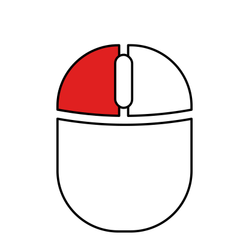
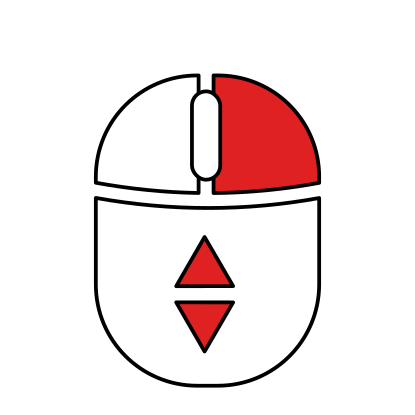
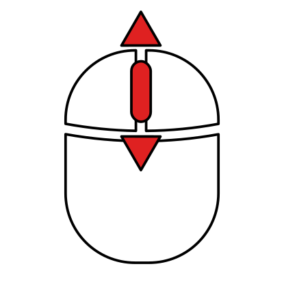

Welcome to the MITK Workbench!
Load and view medical images from all kinds of imaging modalities like X-ray, US, CT, MRI, and many more. Use our tools to efficiently create segmentations, measure anatomical structures, inspect image statistics, or register multiple images to each other.
The MITK Workbench is developed at the ↪ German Cancer Research Center (DKFZ).
It is based on the free open source ↪ Medical Imaging Interaction Toolkit (MITK).
Mouse navigation
Your images are typically shown from three different view directions at once: axial, sagittal, and coronal. Together, the view planes resemble the shape of a three-dimensional crosshair slicing through your image data. Use the mouse to navigate in these views.
Focus
Use the left mouse button to focus all views on the clicked position.
Zoom
Press and hold the right mouse button and move the mouse up and down to zoom in and out.
Pan

Press and hold the middle mouse button and move the mouse to pan around.
Scroll
Use the scroll wheel to scroll through slices along the view's direction.
Image contrast
For images, a vertical scale is shown right next to the views. It is called the level window.
The values shown in the level window represent the pixel intensities of an image. The blue bar defines the range of pixel intensities that is mapped onto the whole range of displayable pixel brightness. Hence, a shorter range of pixel intensities results in higher displayed image contrast.
Grab the blue bar to move it up and down.
Grab the tips of the blue bar to change its size.
Right-click on the level window for many more options.